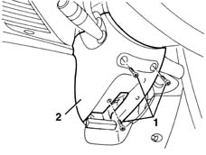
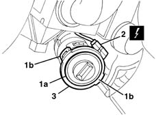

5580E08 aerial for alpha code - r r
- Path
- Procedures > 55 ELECTRICAL EQUIPMENT > 5580 SPECIAL ACCESSORIES > 5580E anti-theft device > 5580E08 aerial for alpha code - r r
- Kind
- repair procedure (removal / refitting; the operation number is the code)
- Applies to
- all engines; all production periods
- Interactive page
- https://sloeber94.github.io/elrnDB-lYpsln/en/#/2429461
Applies to: all engines; all production periods
 Removing
Removing
 Refitting
Refitting1. Undo the bolts.
2. Remove the steering column lower trim.

Applies to: all engines; all production periods
1. Move the CODE aerial (1a) by releasing both tabs (1b).
2. Disconnect the electrical connection.
 | Name | Connector |
|---|---|---|
2 | Aerial for CODE |
3. Recover the CODE aerial.

Applies to: all engines; all production periods
Refitting
RemovingCheck that the aerial is not damaged.
Connect the electrical connection and place the aerial in position engaging the tabs.
Fit the lower steering column cover and secure it using the bolts.